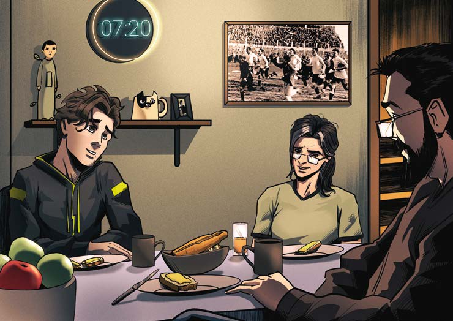

—No, nosotros.
Y bastante antes de que existiera el Mundial.
El Negro Andrade, cuando Uruguay ganó aquellas olimpíadas.
Le explotó el alma.
La Selección salió a saludar a la tribuna, y el Negro se mandó y empezó a correr rodeando la cancha.
Todos lo siguieron.
Incluso los jueces y los periodistas, los fotógrafos.
Un cra, el Negro.
—No sabía que te apasionaba el fútbol —dice la madre.
—Ha de ser herencia del viejo.
Parece que la cosa se transmite de abuelos a nietos.
El bisabuelo supo ser cronista.
Dicen que era bueno.
No se habla mucho del bisabuelo, ni mucho menos de su padre, el tatarabuelo de Javier, un anarquista nacido en Italia y que llegó a Uruguay en 1920.
El bisabuelo había